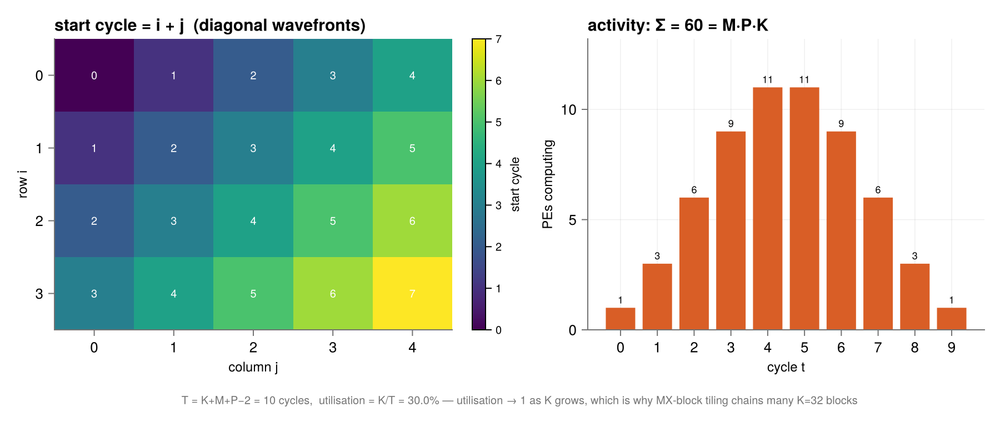

Hardware models
The systolic array
A GEMM engine is the FMA datapath tiled: many MAC units arranged so operands are fetched once and reused in flight.
xpuFP.systolic_run — Function
systolic_run(A, B) -> SystolicRunSimulate C = A·B on an output-stationary systolic array, one PE per output entry.
Processing element (i,j) owns accumulator C[i,j]; each cycle it multiplies the a arriving from its left by the b arriving from above, adds the product in, and passes a rightward and b downward. The only cleverness is the skew: row i of A enters i cycles late and column j of B enters j cycles late, so at cycle t, PE (i,j) receives exactly the matched pair
\[a_{i,k} \text{ and } b_{k,j}, \qquad k = t - i - j\]
and the right operands meet at the right place with no addressing logic at all — position in space plus delay in time is the index arithmetic.
julia> r = systolic_run([1.0 2.0; 3.0 4.0], [5.0 6.0; 7.0 8.0]);
julia> r.C
2×2 Matrix{Float64}:
19.0 22.0
43.0 50.0
julia> r.cycles, r.activity
(4, [1, 3, 3, 1])xpuFP.systolic_cycles — Function
systolic_cycles(M, K, P) -> IntThe cycle count T = K + M + P − 2. PE (i,j) cannot begin until data reaches it: the head of row i takes i hops from the left edge and the head of column j takes j hops from the top, so its working window is [i+j, i+j+K−1], and the whole computation ends when the farthest PE finishes.
julia> systolic_cycles(2, 2, 2), systolic_cycles(4, 3, 5)
(4, 10)xpuFP.systolic_utilization — Function
systolic_utilization(M, K, P) -> Float64K / (K + M + P − 2) — the fraction of PE-cycles doing useful work.
Utilization → 1 as K grows, which is precisely why real deployments keep the reduction depth long: marching over many K = 32 MX blocks back-to-back keeps the array in its dense steady state instead of forever ramping.
xpuFP.systolic_start_cycle — Function
systolic_start_cycle(i, j) -> IntThe cycle PE (i,j) begins work: its taxicab distance i + j from the corner. Equal start times form the diagonal wavefronts that sweep the array.
Processing element $(i,j)$ owns accumulator $C_{ij}$; each cycle it multiplies the $a$ arriving from its left by the $b$ arriving from above, adds the product in, and passes $a$ rightward and $b$ downward. The only cleverness is the skew: row $i$ enters $i$ cycles late and column $j$ enters $j$ cycles late, so at cycle $t$ the PE receives exactly the matched pair with $k = t - i - j$.
The right operands meet at the right place with no addressing logic at all — position in space plus delay in time is the index arithmetic.
julia> using xpuFP
julia> r = systolic_run([1.0 2.0; 3.0 4.0], [5.0 6.0; 7.0 8.0]);
julia> r.C
2×2 Matrix{Float64}:
19.0 22.0
43.0 50.0
julia> r.cycles, r.activity, r.exact
(4, [1, 3, 3, 1], true)Substituting $k = t-i-j$ over PE $(i,j)$'s window turns its accumulated total into $\sum_k A_{ik}B_{kj}$ — each product formed exactly once and accumulated in ascending $k$, term for term and in the same order as the textbook triple loop. It is the same sum, scheduled in space-time.
plot_systolic_activity(4, 3, 5)
Utilisation is $K/(K+M+P-2)$, which $\to 1$ as $K$ grows. That is the quantitative reason real deployments keep the reduction depth long — marching over many $K = 32$ MX blocks back-to-back keeps the array in its dense steady state instead of forever ramping.